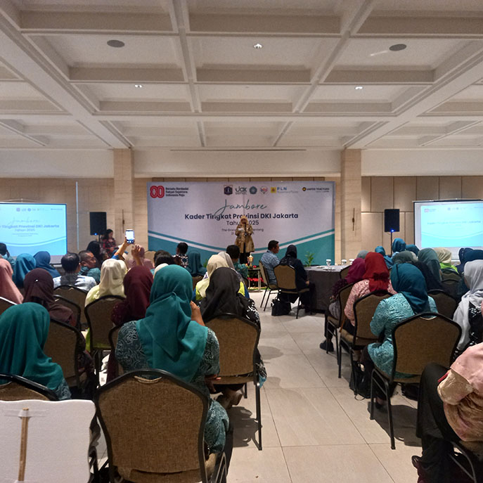

Tanggal, 21 Agustus 2025
MediaKada | Dalam rangka pembinaan Posyandu Bidang Layanan Kesehatan, Dinas Kesehatan Provinsi DKI Jakarta menyelenggarakan Jambore Kader dan Posyandu Berprestasi Tingkat Provinsi DKI Jakarta pada Kamis, 21 Agustus 2025, bertempat di Hotel The Grand Mansion, Menteng, Jakarta.
Pemerintah Kota Administrasi Jakarta Barat yang diwakili oleh Sri Wahyuni, Kader Posyandu Siklus Hidup Melati RW 08 Kelurahan Kelapa Dua, berhasil mendapatkan Juara Ke-3 dalam lomba Jambore Kader dan Posyandu Bidang Kesehatan Berprestasi Tingkat Provinsi DKI Jakarta.
(LMK-08 Kelapa Dua)
Home